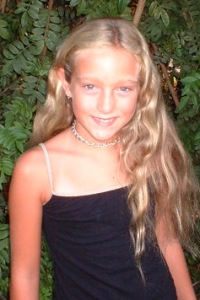

|  |
CAGE Winter 2005 Cage has been busy getting excellent grades in school as well as having a perfect 100% attendance record. She also beat her own personal running-club record by running 16 laps all together! Fall 2004 Cage launched into fifth grade this autumn, ecstatic about her last year of elementary school. She has joined the morning running club and is really looking forward to her school�s Hallowe�en carnival. Legend has it that it rivals the Bellview Elementary carnivals of the past, but one must wait to compare. Want to know more about Cage? CLICK HERE for her spotlight. |